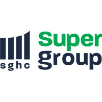
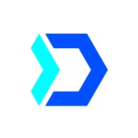
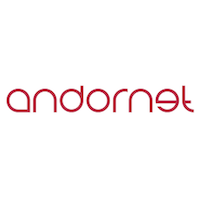
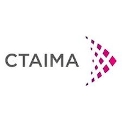

Software Engineering ManagerJun 2026 - Present
- Lead the technical transition from Derivco’s legacy infrastructure to Super Group’s cloud environment, following the strategic acquisition of Derivco’s Sportsbook.
- Orchestrate the unification of the two Sportsbook platforms, integrating Africa’s Player Account Management system into our global platform and migrating all betting transactions.
- Spearhead the adoption of new corporate coding standards in Go and drive the transition to MongoDB across core backend systems, shifting towards a full data ownership model.
- Align with corporate stakeholders, Product, Operations and Site Reliability Engineering teams to mitigate risks and guarantee seamless product delivery during the migration phase.

Software Engineering ManagerFeb 2024 - Jun 2026
- Lead high performing Software Engineers and Tech Leads across multiple countries, driving the development of critical distributed backend services in a high throughput Sportsbook system.
- Oversee two strategic domains: one managing logins and real time betting transactions, the other delivering a newly architected rewards engine from scratch driving revenue growth.
- Partner with Product, Operations and other Engineering teams to align priorities, shape the roadmap and deliver high impact features that align with business goals and enhance product value.
- Scale the engineering organisation by hiring, designing growth paths and fostering a culture of high performance, collaboration and continuous improvement.
Senior Software EngineerMay 2022 - Feb 2024
- Build new microservices from scratch, written in Go and deployed in Kubernetes clusters.
- Scale current microservices to go live in new markets and improve code quality.
- Act as interim Team Lead, unblocking engineers to ensure delivery and supporting technical hiring.
- Coordinate a Testing & Performance Guild for the department.
Software EngineerJan 2021 - May 2022
- Develop, test, integrate, and maintain microservices written in Go.
- Replace legacy projects written in Elixir with implementations in Go.
- Manage PostgreSQL databases.
- Monitor systems and logs using Grafana and Splunk.

Software EngineerFeb 2020 - Jan 2021
- Define, develop, and go live with customized ASP.NET MVC web apps from scratch.
- Manage SQL Server databases.
- Implement CI/CD in existing company projects.

Software EngineerJan 2019 - Feb 2020
- Design and develop a new product formed by a REST API in .NET Core and a SPA in Vue.js.
- Develop an individual project consisting in a chatbot, integrable in corporate web apps, powered by Microsoft Bot Framework and populated with a QnA Maker knowledge database.
- Manage SQL Server and CosmosDB databases.
| Strategy | People Management | Leadership |
| Distributed Systems | System Architecture | Cloud Infrastructure |
| Go | .NET | Software Testing |
| English | Spanish | Catalan |